Optimizing the Transaction Processes for users in
This case study was part of a UX challenge conducted under the supervision of a mentor who provided guidance and feedback throughout the project. The subject of the challenge was to improve the UX issues of a popular and frequently used application. This challenge aimed to simulate a real-world design scenario, allowing our team to apply our skills and knowledge in a practical setting through an iterative research and ideation process.
My Role
This case study was completed as part of a UX challenge under the guidance of a mentor who provided feedback throughout the project. I collaborated with two other UX designers, leading the project end-to-end through daily remote collaboration and also contributing hands-on as a UX Designer. Balancing leadership and hands-on design allowed me to bring both strategic direction and practical design thinking to the project.
🎙️ Context
PayPal is a digital payment platform that allows individuals and businesses to send, receive, and manage money securely online. In this case study, we explore the payment process within the PayPal app to identify pain points and design solutions that enhance the user experience. Improving these features is crucial for PayPal as it ensures user satisfaction, encourages frequent use, and maintains its competitive edge in the digital payment market.
Business Objective
Increase efficiency and reduce friction by simplifying and streamlining the transaction processes on PayPal.
Problem
Users frequently encounter difficulties and confusion during transactions on PayPal, resulting in delays, errors, and frustration. This impacts user satisfaction and potentially reduces the frequency of use.
Expected Outcome
A more intuitive and efficient transaction process that minimizes errors, reduces transaction time, and enhances overall user satisfaction and engagement with the PayPal platform.
💬️ Our Assumptions
Prior to starting our research, we outlined our assumptions regarding possible challenges in PayPal's transaction process based on our experience as users. These assumptions helped shape the direction of our research moving forward.
Difficult Bank Account Linking and Transactions
Users faced challenges with unclear instructions for adding bank accounts, lack of immediate feedback after payments, delayed transfers, complex setups with 2-step verification, and confusion about fees deducted from both parties.
Confusing Receipts and Confirmation Step
Users faced issues with a lack of receipts, no clear labels for recent transactions, unclear confirmation page during money transfer, and a poorly functioning messaging feature that doesn't provide in-app notifications.
Inconsistent Navigation and User Interface
Users encountered issues with unclear icons and titles, difficulty selecting and changing payment cards, and the lack of intuitive button indicators, along with limited support for biometric or face ID logins on Android devices.
Unclear Errors and Fees
Users struggled with vague error messages that often fail to specify the issue, and experienced confusion due to fees that are sometimes not clearly mentioned or explained, leading to uncertainty and frustration.
🔎 Research
To identify the pain points users face while using the PayPal app, we conducted both primary and secondary research.
Interview
We conducted 5 user interviews with a diverse group of users to gather direct feedback on their experiences with the PayPal app. This helped us understand specific usability issues and user frustrations.
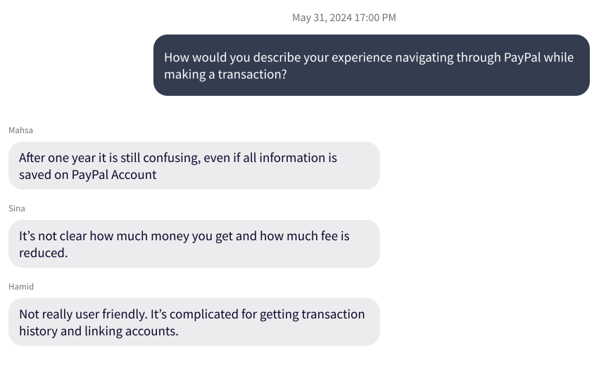
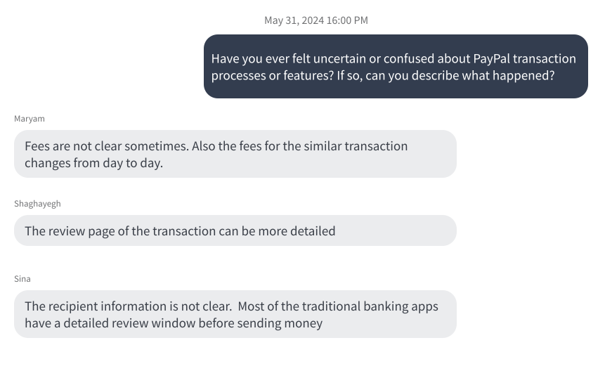
The biggest themes that we discovered based on the interviews was Unclear Transaction fee, Unclear Error and Confusing transaction process.
Desk Research
We analyzed online sources such Apple and Google app stores and websites like Reddit and Trustpilot to see what problems other users have reported. This gave us a broader perspective on common issues faced by the PayPal user base.
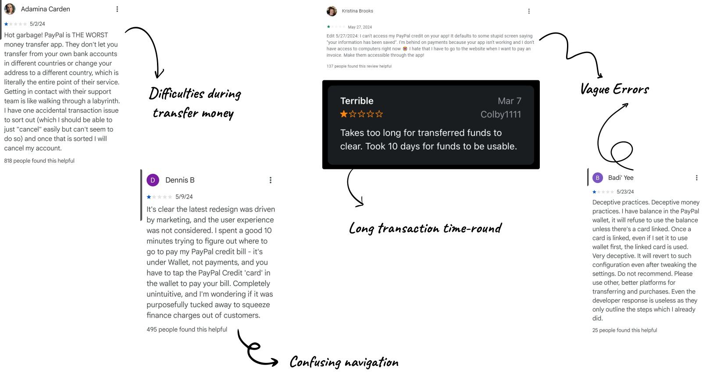
📌 Affinity Diagram
Based on the key findings from interviews and online reviews about PayPal's transaction process, we compiled and organized the information into different categories:
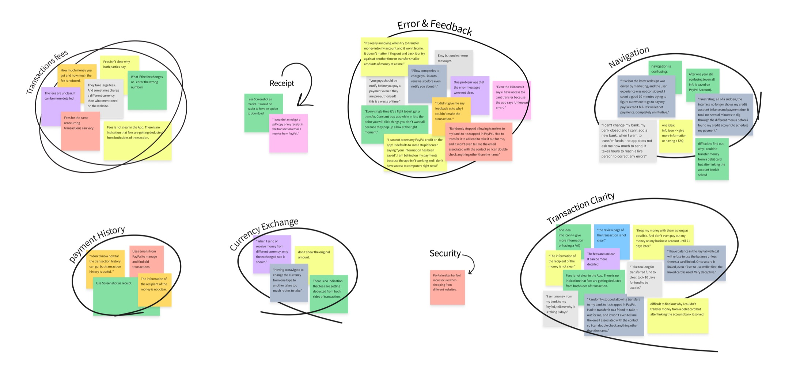
🔑️ Key Finding
Our research, comprising both user interviews and analysis of online sources such as app store and website reviews, revealed several key issues with the PayPal app.
🤷♂️ Getting Around the App is Tough
Users struggled to find the payment feature easily, and the app's navigation was often described as confusing and inconsistent. The interface was often described as cluttered and difficult to navigate, making it hard for users to find what they needed.
💸 Payment and Confirmation Woes
The confirmation steps were not straightforward, causing confusion and frustration among users. They also expressed a desire for a quicker way to send money to frequent contacts, as the current process was seen as cumbersome, with transactions often remaining pending for an extended period.
❓ Confusing Errors and Surprise Fees
Users frequently reported unclear error messages during their transactions, which often failed to specify the issue. Moreover, many users were confused about transaction fees, which were sometimes not clearly mentioned or explained, leading to unexpected charges.
🤯 Customer Support Headaches
Users expressed frustration with the lack of timely and helpful customer support, which exacerbated their issues with the app. The delays and unhelpful responses made resolving problems difficult and added to their overall dissatisfaction with the service.
👩 Personas
Through our research and key findings, we identified two main user personas. These personas helped guide our design decisions by providing a clear picture of the users' goals, frustrations, and behaviors.
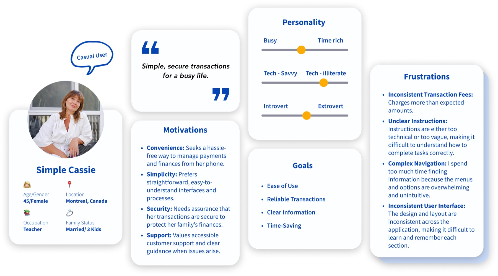
Problem statement
User Problem
As a less tech-savvy user, I need/want a a simple and secure platform for managing personal transactions and online shopping so that I can complete tasks efficiently without frustration.
User Need
Managing personal transactions and online shopping, is challenging for less tech-savvy users because of confusing navigation, instructions, and UI.
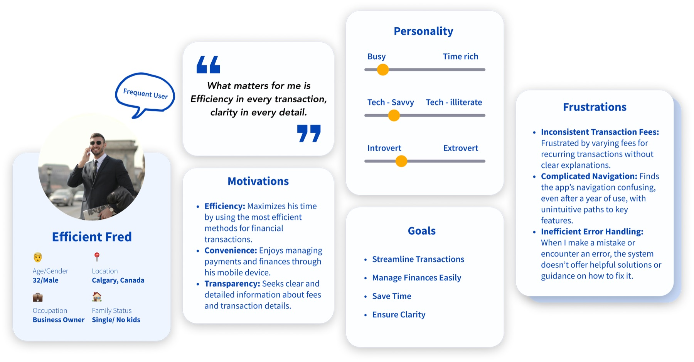
Problem statement
User Problem
Managing financial transactions, is challenging for power users because of inconsistent transaction fees and difficult navigation.
User Need
As a tech-savvy business owner, I need/want a reliable and transparent platform for managing financial transactions so that I can streamline my finances efficiently and save time.
🔍 Competitive Analysis
To understand how PayPal's user experience compares to its competitors, we conducted a competitive analysis focusing on key features and usability aspects. We analyzed popular payment apps, including Wise, Apple Pay, and Remitly, to identify strengths and weaknesses relative to PayPal. Although some of the chosen apps aren't directly PayPal remittance competitors but there were interesting features within them that gave us insight for our designs.
Wise
Wise, formerly known as TransferWise, is a service focused on providing low-cost international money transfers. It emphasizes transparency in fees and offers competitive exchange rates, making it a popular choice for sending money across borders.
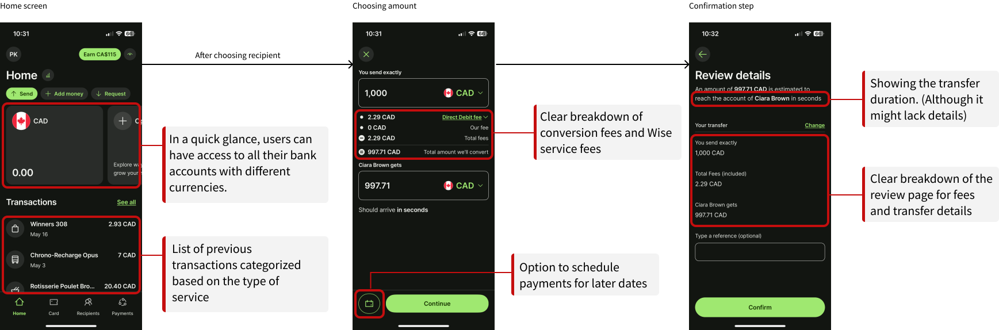
Apple Pay
(for online payments)
Apple Pay is a mobile payment and digital wallet service by Apple Inc. that allows users to make payments in person, in iOS apps, and on the web using Safari. Known for its seamless integration with the Apple ecosystem and strong security features, Apple Pay offers a streamlined and secure experience for online purchases. Although the compared features of this service might be out of scope for this case study, there are overlaps they we can analyze further.
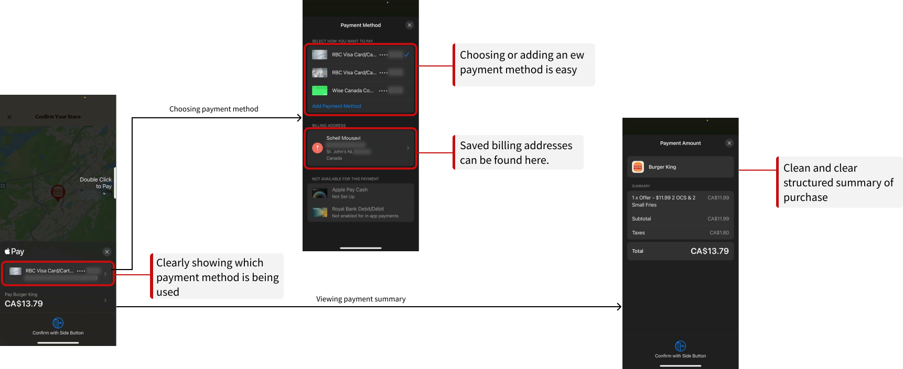
Remitly
Remitly is a digital remittance service that allows users to send money internationally with speed and ease. Known for its multiple transfer options, Remitly caters to users looking for reliable and affordable ways to send money across borders.
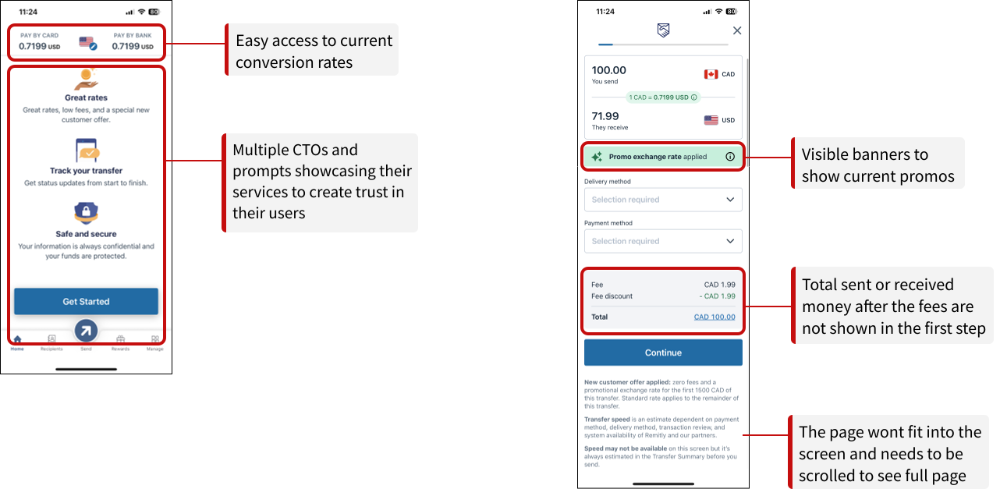
🧐 Ideation and Solution
After identifying and prioritizing user pain points and proposing design solutions, we used an impact-effort matrix to evaluate which changes would provide the most value to users with the reasonable amount of development effort. This helped us prioritize our efforts and ensure that we focused on solutions that would deliver the greatest impact.
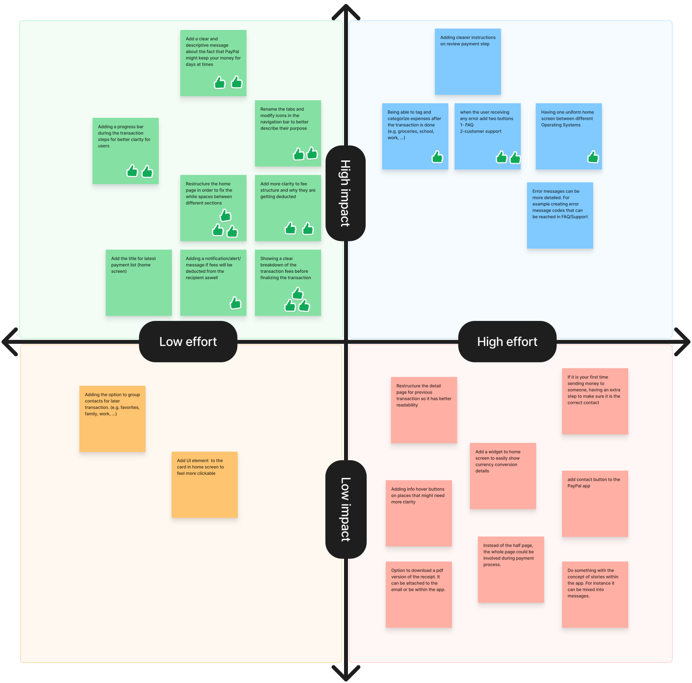
✍️ User feedback and Iterations
We narrowed down on potential ideas and, we iterated on the design for PayPal Transaction process based on the user needs and pain points. We created high-fidelity prototype and moved on to evaluate on that.
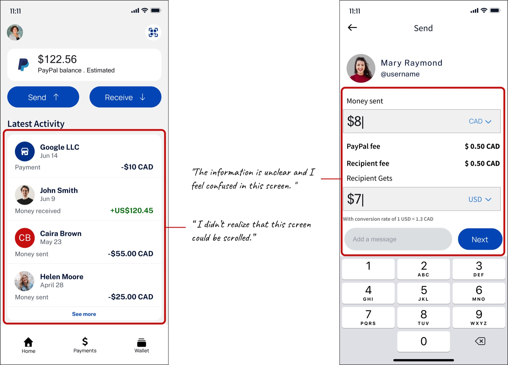
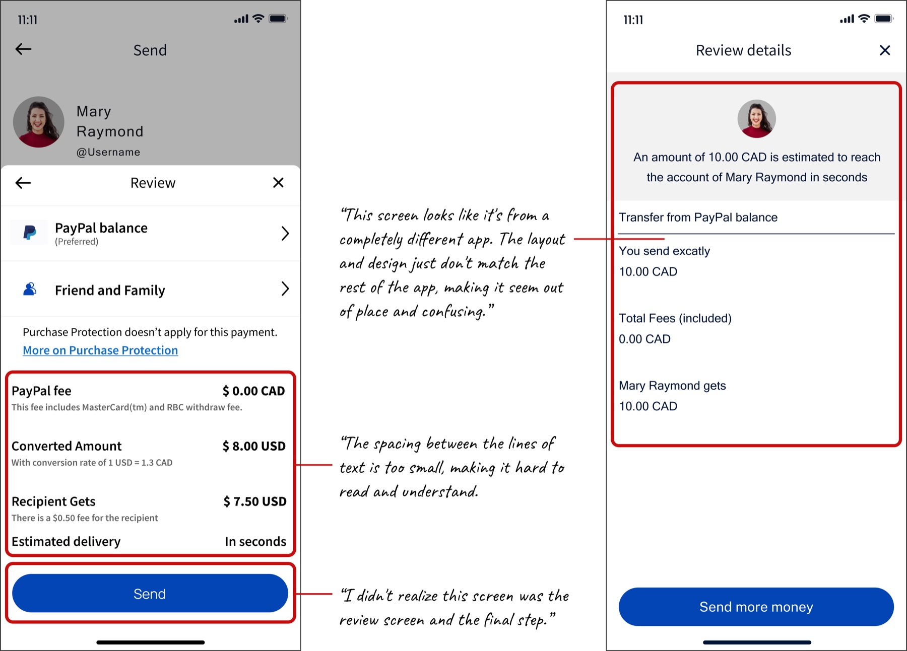
🎯️ User Testing Insights
We evaluated our initial design by conducting tests with users and collecting feedback.
01
Users were confused to find and understand all the transactions informations.
02
Users need more clarity regarding the transactions steps.
03
Users had difficulty for exploring the home page.
04
User get confused that the transaction is successful or not.
🎬 Final Design

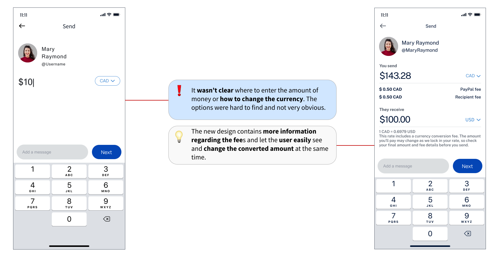
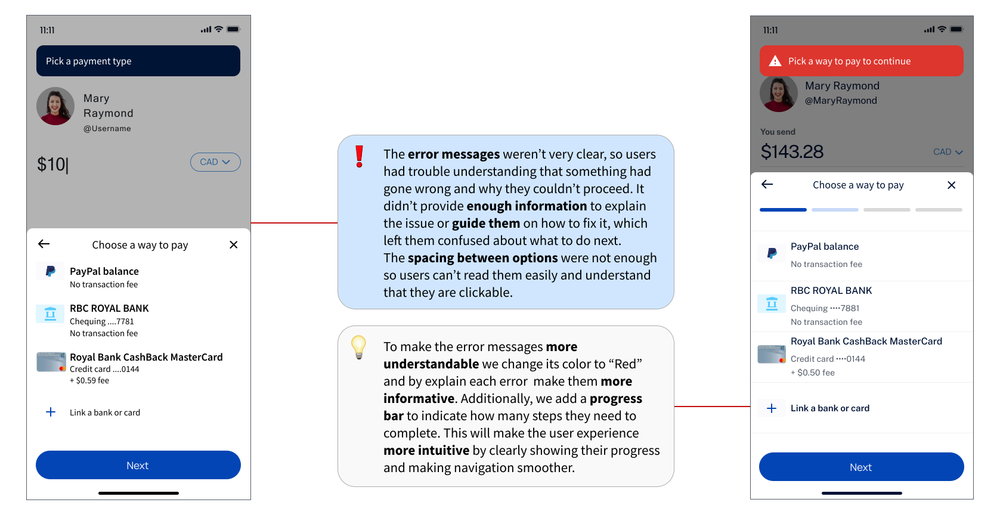
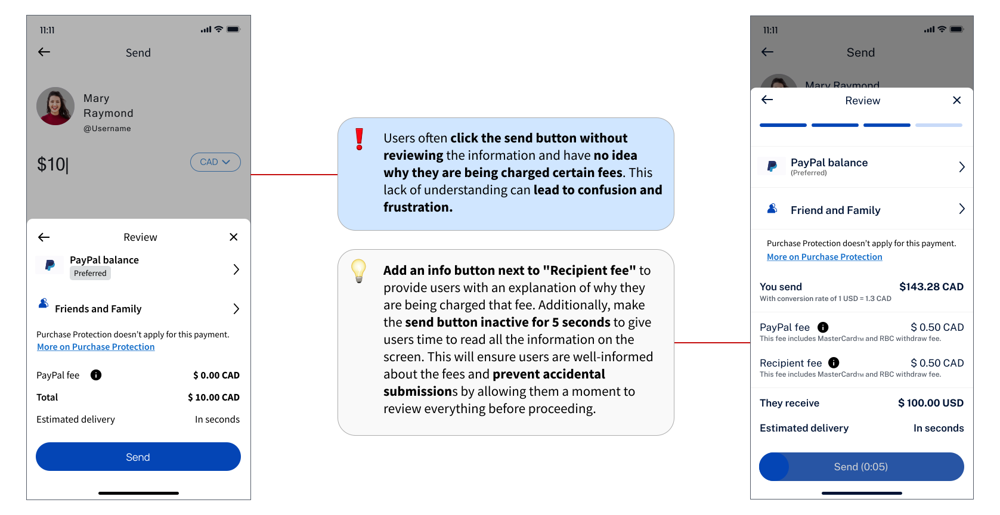
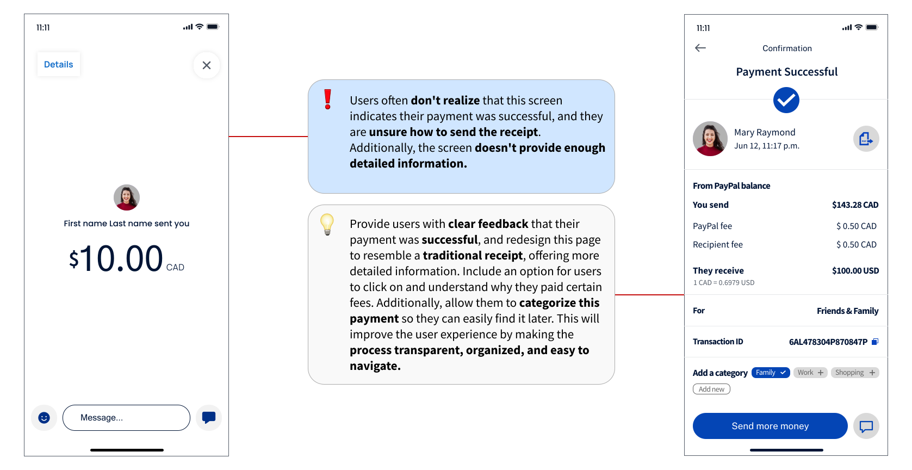
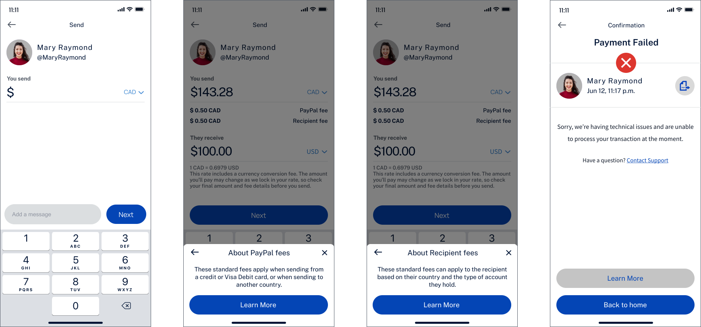
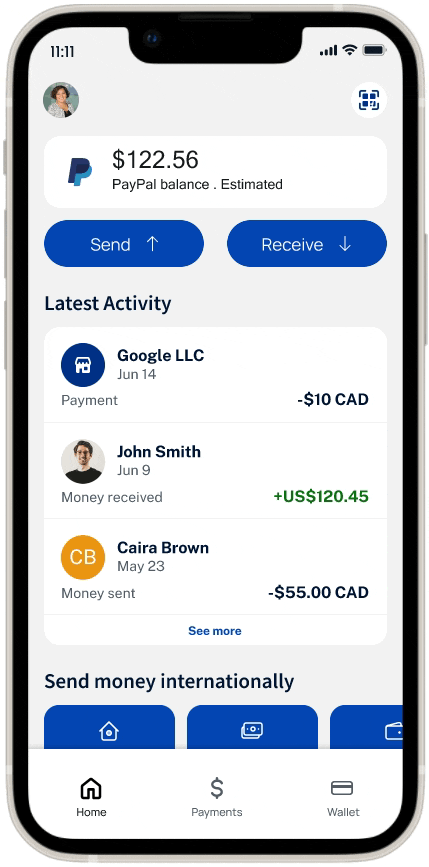
🤔 Reflections
- Our research revealed that while visual improvements are important, users place a higher value on security, reliability, and cost of service. Many users expressed concerns about the security of their transactions, the reliability of the service, and the transparency of fees. Our design aimed to assist users to reach these criteria with a user centric approach.
- We noted significant differences between users' behaviors and needs. Frequent users seek a dependable and clear platform for efficient financial management, while casual users prefer more intuitive navigation and clear instructions. Understanding these varied needs allowed us to tailor our solutions to enhance the experience for both user groups
- Compared to similar apps, PayPal offers few unique advantages, resulting in low user loyalty. Recognizing the importance of strong design and a positive user experience, we aim to enhance both aspects to foster greater user satisfaction and retention.
More case studies